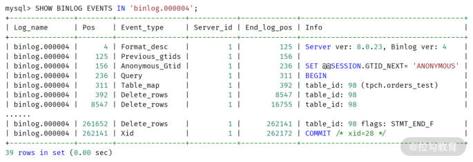
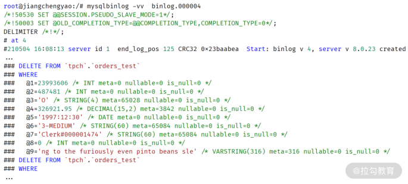
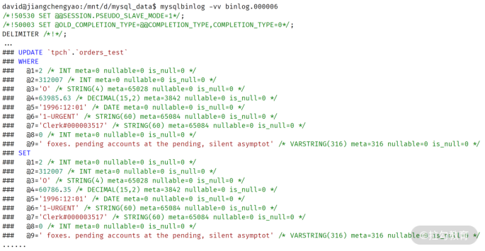
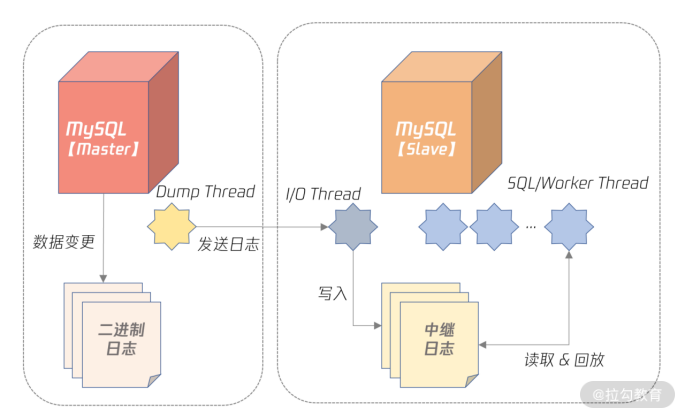
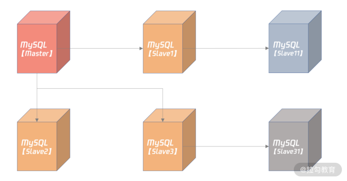
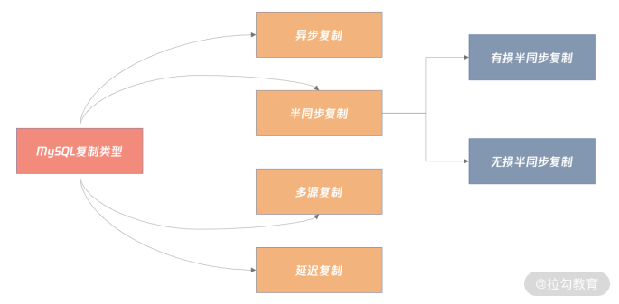
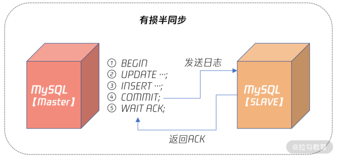
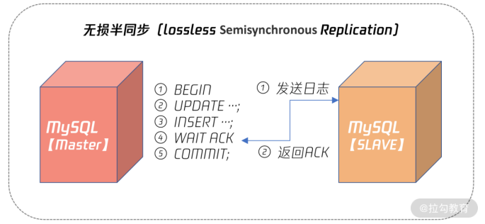
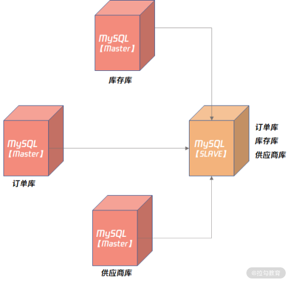

- 00 开篇词 从业务出发，开启海量 MySQL 架构设计.md.html
- 01 数字类型：避免自增踩坑.md.html
- 02 字符串类型：不能忽略的 COLLATION.md.html
- 03 日期类型：TIMESTAMP 可能是巨坑.md.html
- 04 非结构存储：用好 JSON 这张牌.md.html
- 05 表结构设计：忘记范式准则.md.html
- 06 表压缩：不仅仅是空间压缩.md.html
- 07 表的访问设计：你该选择 SQL 还是 NoSQL？.md.html
- 08 索引：排序的艺术.md.html
- 09 索引组织表：万物皆索引.md.html
- 10 组合索引：用好，性能提升 10 倍！.md.html
- 11 索引出错：请理解 CBO 的工作原理.md.html
- 12 JOIN 连接：到底能不能写 JOIN？.md.html
- 13 子查询：放心地使用子查询功能吧！.md.html
- 14 分区表：哪些场景我不建议用分区表？.md.html
- 15 MySQL 复制：最简单也最容易配置出错.md.html
- 16 读写分离设计：复制延迟？其实是你用错了.md.html
- 17 高可用设计：你怎么活用三大架构方案？.md.html
- 18 金融级高可用架构：必不可少的数据核对.md.html
- 19 高可用套件：选择这么多，你该如何选？.md.html
- 20 InnoDB Cluster：改变历史的新产品.md.html
- 21 数据库备份：备份文件也要检查！.md.html
- 22 分布式数据库架构：彻底理解什么叫分布式数据库.md.html
- 23 分布式数据库表结构设计：如何正确地将数据分片？.md.html
- 24 分布式数据库索引设计：二级索引、全局索引的最佳设计实践.md.html
- 25 分布式数据库架构选型：分库分表 or 中间件 ？.md.html
- 26 分布式设计之禅：全链路的条带化设计.md.html
- 27 分布式事务：我们到底要不要使用 2PC？.md.html
15 MySQL 复制：最简单也最容易配置出错
从今天开始，我们正式进入高可用架构的设计环节。
在前两个模块中，我们学习了 MySQL 架构中的表结构设计、索引设计。对业务开发的同学来说，掌握这些内容已经能很好地面向业务逻辑进行编码工作了。
但是业务需要上线，所以除了表和索引的结构设计之外，你还要做好高可用的设计。因为在真实的生产环境下，如果发生物理硬件故障，没有搭建高可用架构，会导致业务完全不可用。
而这在海量并发访问的互联网业务中完全不敢想象。所以除了业务架构，还要做好可用性的架构设计。
这一讲，我们就来学习 MySQL 高可用架构中最基础、最为核心的内容：MySQL 复制（Replication）。
MySQL 复制架构
数据库复制本质上就是数据同步。MySQL 数据库是基于二进制日志（binary log）进行数据增量同步，而二进制日志记录了所有对于 MySQL 数据库的修改操作。
在默认 ROW 格式二进制日志中，一条 SQL 操作影响的记录会被全部记录下来，比如一条 SQL语句更新了三行记录，在二进制日志中会记录被修改的这三条记录的前项（before image）和后项（after image）。
对于 INSERT 或 DELETE 操作，则会记录这条被插入或删除记录所有列的信息，我们来看一个例子：
DELETE FROM orders_test
WHERE o_orderdate = '1997-12-31';
Query OK, 2482 rows affected (0.07 sec)
可以看到，上面这条 SQL 执行的是删除操作，一共删除了有 2482 行记录。可以在 mysql 命令行下使用命令 SHOW BINLOG EVENTS 查看某个二进制日志文件的内容，比如上述删除操作发生在二进制日志文件 binlog.000004 中，你可以看到：

通过 MySQL 数据库自带的命令 mysqlbinlog，可以解析二进制日志，观察到更为详细的每条记录的信息，比如：

从图中，你可以通过二进制日志记录看到被删除记录的完整信息，还有每个列的属性，比如列的类型，是否允许为 NULL 值等。
如果是 UPDATE 操作，二进制日志中还记录了被修改记录完整的前项和后项，比如：

在有二进制日志的基础上，MySQL 数据库就可以通过数据复制技术实现数据同步了。而数据复制的本质就是把一台 MySQL 数据库上的变更同步到另一台 MySQL 数据库上。下面这张图显示了当前 MySQL 数据库的复制架构：

可以看到，在 MySQL 复制中，一台是数据库的角色是 Master（也叫 Primary），剩下的服务器角色是 Slave（也叫 Standby）：
- Master 服务器会把数据变更产生的二进制日志通过 Dump 线程发送给 Slave 服务器；
- Slave 服务器中的 I/O 线程负责接受二进制日志，并保存为中继日志；
- SQL/Worker 线程负责并行执行中继日志，即在 Slave 服务器上回放 Master 产生的日志。
得益于二进制日志，MySQL 的复制相比其他数据库，如 Oracle、PostgreSQL 等，非常灵活，用户可以根据自己的需要构建所需要的复制拓扑结构，比如：

在上图中，Slave1、Slave2、Slave3 都是 Master 的从服务器，而 Slave11 是 Slave1 的从服务器，Slave1 服务器既是 Master 的从机，又是 Slave11 的主机，所以 Slave1 是个级联的从机。同理，Slave3 也是台级联的从机。
在了解完复制的基本概念后，我们继续看如何配置 MySQL 的复制吧。
MySQL 复制配置
搭建 MySQL 复制实现非常简单，基本步骤如下：
- 创建复制所需的账号和权限；
- 从 Master 服务器拷贝一份数据，可以使用逻辑备份工具 mysqldump、mysqlpump，或物理备份工具 Clone Plugin；
- 通过命令 CHANGE MASTER TO 搭建复制关系；
- 通过命令 SHOW SLAVE STATUS 观察复制状态。
虽然 MySQL 复制原理和实施非常简单，但在配置时却容易出错，请你务必在配置文件中设置如下配置：
gtid_mode = on
enforce_gtid_consistency = 1
binlog_gtid_simple_recovery = 1
relay_log_recovery = ON
master_info_repository = TABLE
relay_log_info_repository = TABLE
上述设置都是用于保证 crash safe，即无论 Master 还是 Slave 宕机，当它们恢复后，连上主机后，主从数据依然一致，不会产生任何不一致的问题。
我经常听有同学反馈：MySQL会存在主从数据不一致的情况，请确认上述参数都已配置，否则任何的不一致都不是 MySQL 的问题，而是你使用 MySQL 的错误姿势所致。
了解完复制的配置后，我们接下来看一下 MySQL 支持的复制类型。
MySQL复制类型及应用选项
MySQL 复制可以分为以下几种类型：

默认的复制是异步复制，而很多新同学因为不了解 MySQL 除了异步复制还有其他复制的类型，所以错误地在业务中使用了异步复制。为了解决这个问题，我们一起详细了解一下每种复制类型，以及它们在业务中的选型，方便你在业务做正确的选型。
异步复制
在异步复制（async replication）中，Master 不用关心 Slave 是否接收到二进制日志，所以 Master 与 Slave 没有任何的依赖关系。你可以认为 Master 和 Slave 是分别独自工作的两台服务器，数据最终会通过二进制日志达到一致。
异步复制的性能最好，因为它对数据库本身几乎没有任何开销，除非主从延迟非常大，Dump Thread 需要读取大量二进制日志文件。
如果业务对于数据一致性要求不高，当发生故障时，能容忍数据的丢失，甚至大量的丢失，推荐用异步复制，这样性能最好（比如像微博这样的业务，虽然它对性能的要求极高，但对于数据丢失，通常可以容忍）。但往往核心业务系统最关心的就是数据安全，比如监控业务、告警系统。
半同步复制
半同步复制要求 Master 事务提交过程中，至少有 N 个 Slave 接收到二进制日志，这样就能保证当 Master 发生宕机，至少有 N 台 Slave 服务器中的数据是完整的。
半同步复制并不是 MySQL 内置的功能，而是要安装半同步插件，并启用半同步复制功能，设置 N 个 Slave 接受二进制日志成功，比如：
plugin-load="rpl_semi_sync_master=semisync_master.so;rpl_semi_sync_slave=semisync_slave.so"
rpl-semi-sync-master-enabled = 1
rpl-semi-sync-slave-enabled = 1
rpl_semi_sync_master_wait_no_slave = 1
上面的配置中：
- 第 1 行要求数据库启动时安装半同步插件；
- 第 2、3 行表示分别启用半同步 Master 和半同步 Slave 插件；
- 第 4 行表示半同步复制过程中，提交的事务必须至少有一个 Slave 接收到二进制日志。
在半同步复制中，有损半同步复制是 MySQL 5.7 版本前的半同步复制机制，这种半同步复制在Master 发生宕机时，Slave 会丢失最后一批提交的数据，若这时 Slave 提升（Failover）为Master，可能会发生已经提交的事情不见了，发生了回滚的情况。
有损半同步复制原理如下图所示：

可以看到，有损半同步是在 Master 事务提交后，即步骤 4 后，等待 Slave 返回 ACK，表示至少有 Slave 接收到了二进制日志，如果这时二进制日志还未发送到 Slave，Master 就发生宕机，则此时 Slave 就会丢失 Master 已经提交的数据。
而 MySQL 5.7 的无损半同步复制解决了这个问题，其原理如下图所示：

从上图可以看到，无损半同步复制 WAIT ACK 发生在事务提交之前，这样即便 Slave 没有收到二进制日志，但是 Master 宕机了，由于最后一个事务还没有提交，所以本身这个数据对外也不可见，不存在丢失的问题。
所以，对于任何有数据一致性要求的业务，如电商的核心订单业务、银行、保险、证券等与资金密切相关的业务，务必使用无损半同步复制。这样数据才是安全的、有保障的、即使发生宕机，从机也有一份完整的数据。
多源复制
无论是异步复制还是半同步复制，都是 1 个 Master 对应 N 个 Slave。其实 MySQL 也支持 N 个 Master 对应 1 个 Slave，这种架构就称之为多源复制。
多源复制允许在不同 MySQL 实例上的数据同步到 1 台 MySQL 实例上，方便在 1 台 Slave 服务器上进行一些统计查询，如常见的 OLAP 业务查询。
多源复制的架构如下所示：

上图显示了订单库、库存库、供应商库，通过多源复制同步到了一台 MySQL 实例上，接着就可以通过 MySQL 8.0 提供的复杂 SQL 能力，对业务进行深度的数据分析和挖掘。
延迟复制
前面介绍的复制架构，Slave 在接收二进制日志后会尽可能快地回放日志，这样是为了避免主从之间出现延迟。而延迟复制却允许Slave 延迟回放接收到的二进制日志，为了避免主服务器上的误操作，马上又同步到了从服务器，导致数据完全丢失。
我们可以通过以下命令设置延迟复制：
CHANGE MASTER TO master_delay = 3600
这样就人为设置了 Slave 落后 Master 服务器1个小时。
延迟复制在数据库的备份架构设计中非常常见，比如可以设置一个延迟一天的延迟备机，这样本质上说，用户可以有 1 份 24 小时前的快照。
那么当线上发生误操作，如 DROP TABLE、DROP DATABASE 这样灾难性的命令时，用户有一个 24 小时前的快照，数据可以快速恢复。
对金融行业来说，延迟复制是你备份设计中，必须考虑的一个架构部分。
总结
相信学完今天的内容，你一定会对 MySQL 复制技术有一个清晰的了解，认识到复制是数据同步的基础，而二进制日志就是复制的基石。我总结一下今天的重点：
- 二进制日志记录了所有对于 MySQL 变更的操作；
- 可以通过命令 SHOW BINLOG EVENTS IN ... FROM ... 查看二进制日志的基本信息；
- 可以通过工具 mysqlbinlog 查看二进制日志的详细内容；
- 复制搭建虽然简单，但别忘记配置 crash safe 相关参数，否则可能导致主从数据不一致；
- 异步复制用于非核心业务场景，不要求数据一致性；
- 无损半同步复制用于核心业务场景，如银行、保险、证券等核心业务，需要严格保障数据一致性；
- 多源复制可将多个 Master 数据汇总到一个数据库示例进行分析；
- 延迟复制主要用于误操作防范，金融行业要特别考虑这样的场景。